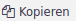

Eigene Felder
Eigene Felder bieten die Möglichkeit für Objekte und ihre Module individuelle Felder anzulegen, um Informationen zu dokumentieren, die mit der xmera Omnia Standardkonfiguration nicht abgebildet werden.
Verwaltet werden Eigene Felder im Administrationsbereich im Menüpunkt Eigene Felder. Über dieses Menü gelangt man in ihre Listenansicht.
Die Eigenen Felder werden spezifisch für jeden Objekttyp getrennt angelegt.
Objekttypen, für die Eigene Felder hinzugefügt werden können, sind in der folgenden Tabelle zu sehen.
| Bereich | Objekttyp |
|---|---|
Objektverwaltung |
Objekte |
Benutzer |
|
Gruppen |
|
Aufgabenmanagement |
Aufgaben |
Aufgaben-Prioritäten |
|
Pakete |
|
Tabellen |
|
Dokumentenverwaltung |
Dokumente |
Dokumentationskategorien |
|
DMS |
|
Zeitmanagement |
Aufgewendete Zeit |
Aktivitäten |
Für jeden Objekttyp, für den mindestens ein eigenes Feld angelegt wurde, ist in der Listenansicht ein Tab vorhanden. Wird ein Objekttyp im Tab ausgewählt, werden die zugeordneten Eigenen Felder angezeigt.
Feldformate
Es stehen eine Vielzahl an Feldformaten zur Verfügung.
| Feldtyp | Beschreibung |
|---|---|
Benutzer |
Aus einer Liste der Objektmitglieder können eine oder mehrere Objektmitglied(er) gewählt werden. |
Boolean |
Ja/Nein Auswahl |
Datei |
Eine Datei kann zugeordnet werden |
Datum |
Ein Datum kann erfasst werden. |
Eigenschaft/Wert-Paar |
Ein Wertepaar aus einem Wert und einer Beschreibung kann zugeordnet werden. |
Fließkommazahl |
Eine Fließkommazahl kann zugeordnet werden. |
Kombinationsmatrix |
Die Kombinationsmatrix definiert das Ergebnis einer Kombination aus zwei Feldern mit dem Format Eigenschaft/Wert-Paar. Jeder Wertekombination kann ein Ergebnis (Text) und eine Farbe zugeordnet werden. |
Langer Text |
Ein mehrzeiliger Text, der formatierbar ist. |
Link |
Ein URL-Link kann erfasst werden. |
Liste |
Aus einer Liste, die im Eigenen Feld definiert wird können ein oder mehrere Wert(e) gewählt werden. |
Paket |
Aus einer Liste der Pakete können ein oder mehrere Pakete gewählt werden. |
Text |
Ein einzeiliger Text, der formatierbar ist. |
Zahl |
Eine ganze Zahl |
| Die vollständige Liste der Feldformate wird nicht für jeden Objekttyp angezeigt. |
Die Parametrierung der einzelnen Feldformate ist spezifisch. Allen eigenen Feldern gemeinsam ist
-
der Name (Definiert das Eigene Feld),
-
die Beschreibung (Wird als Tooltip per Mouseover dem Anwender angezeigt) und
-
Erforderlich (Angehakt wird das Feld zum Pflichtfeld).
Wenn nach dem Feld sinnvoll gefiltert werden kann, so wird die Auswahl Als Filter benutzen angeboten. Nur wenn das Feld angehakt ist, wird das Feld als Filtermöglichkeit angeboten.
Bei Auswahlfeldern (z.B. Listen, Benutzern oder Paketen) ist im Standard nur ein Wert erlaubt. Über Aktivieren der Auswahl Mehrere Werte kann auf Mehrfachauswahl umgestellt werden.
Weiter kann bei der Anzeige der Auswahl zwischen der Dropdown-Liste und der Checkbox gewählt werden.
Abhängig vom Objekttyp, dem das Eigene Feld zugeordnet wird, besteht die Möglichkeit, die Nutzung des Feldes einzuschränken. Mögliche Filter sind
-
Sichtbarkeit (Rollen)
-
Aufgabentyp
-
Objektklassen
Neues Eigenes Feld erstellen
Durch Klick auf den Button wird der Prozess zur Erstellung eines eigenen Feldes gestartet. Als erstes öffnet ein Fenster, in dem der Objekttyp, dem das eigene Feld zugeordnet ist, auszuwählen ist.

Mit Weiter» gelangt man in die Bearbeitungsmaske des eigenen Feldes. Als erstes sollte das Format festgelegt werden, da die folgenden Attribute von dem Feldformat abhängen.
Im folgenden Bild ist der Parametersatz für ein Textfeld zum Objekttyp Aufgaben zu sehen.
Pflichtfeld ist der Name, über den das Feld definiert ist. Die weiteren Attribute sind abhängig vom gewählten Format. Basisinformationen sind dem Kapitel Feldformate zu entnehmen.
Eigenes Feld bearbeiten
Zu jedem Feld aus der Listenansicht gibt es mehrere Bearbeitungsoptionen.
-
Feldparametrierung bearbeiten
-
Reihenfolge bearbeiten
-
Kopieren
-
Löschen
- Feldparametrierung bearbeiten
-
Durch Klick auf den Feldnamen wird die Parameteriermaske des eigenen Feldes aufgerufen. Bis auf das Format können alle Parameter angepasst werden. Mit Klick auf den Button
 werden die Änderungen übernommen.
werden die Änderungen übernommen. - Reihenfolge bearbeiten
-
Die Reihenfolge, in der die eigenen Felder im Objekt angezeigt werden, ist abhängig von der Reihenfolge, in der das eigene Feld in der Liste der Eigenen Felder steht. Durch Klick und Halten der linken Maustaste auf das Icon
 kann die Zeile mit dem Eigenen Feld in der Liste verschoben werden.
kann die Zeile mit dem Eigenen Feld in der Liste verschoben werden.An der Position, an der die linke Maustaste gelöst wird, wird das Eigene Feld platziert.
- Kopieren
-
Um die Erstellung von eigenen Feldern zu erleichtern, kann auch ein bestehendes eigenes Feld kopiert werden. Beim Kopieren (Klick auf den Button ) wird bis auf den Namen die Konfiguration des Ausgangsfelds übernommen.
Mit Klick auf den Button wird das neue Feld erzeugt.
- Löschen
-
Durch Klick auf den Button wird nach der Bestätigung in einem Pop-Up-Fenster das Eigene Feld gelöscht.
Mit dem Löschen des Feldes sind alle erfassten Daten gelöscht! Bei Unsicherheit sollte das eigene Feld nur im Objekt deaktiviert werden. So bleiben die Informationen erhalten und können durch erneutes Aktivieren des Feldes wieder genutzt werden.